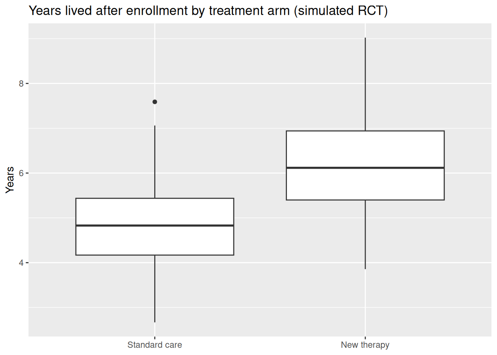
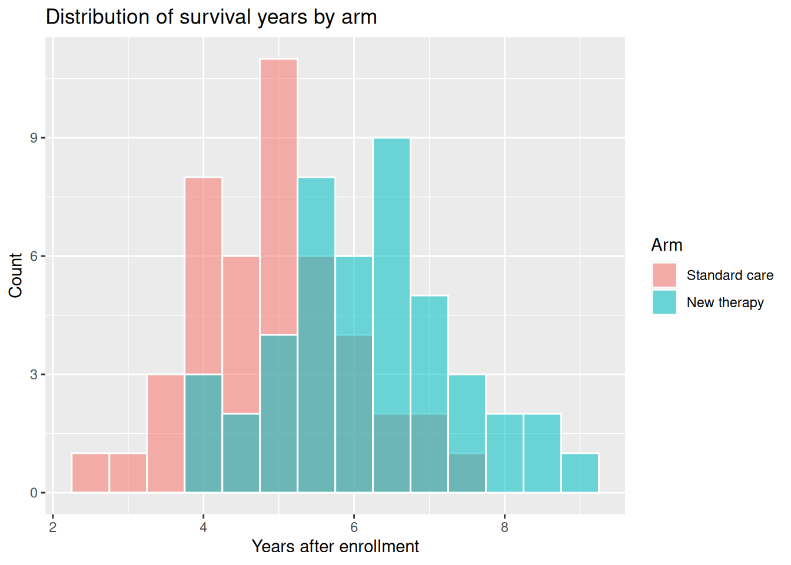
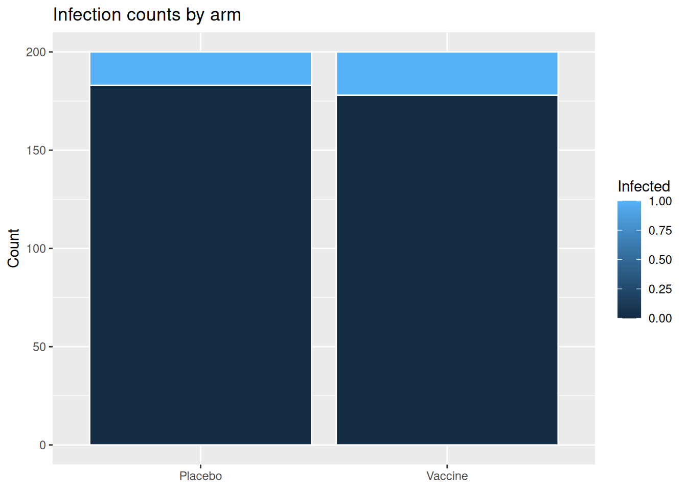
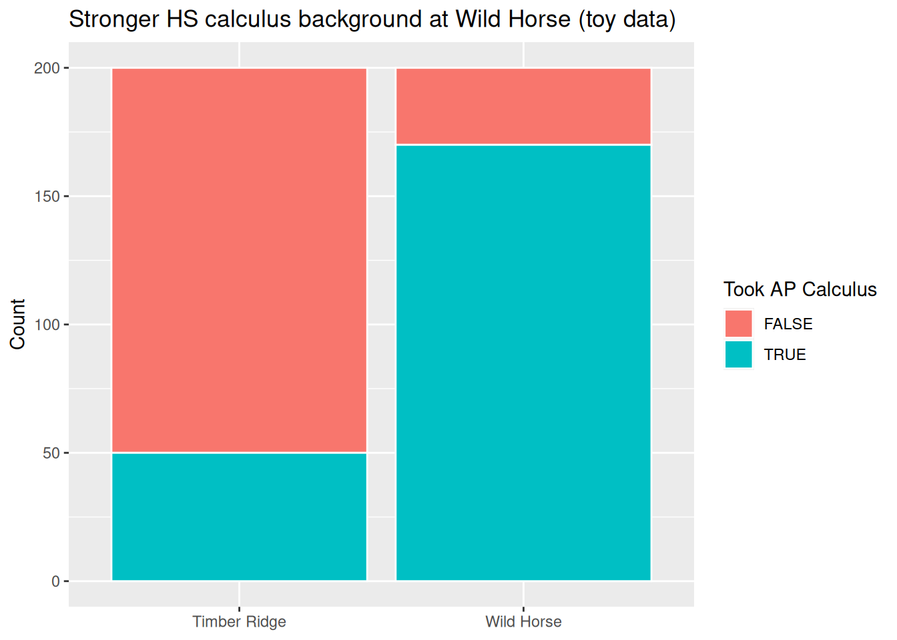

Complete Read 1 and Quiz A first. This reading adds the methods-table habit for two-group comparisons: pick the correct test by variable types, run it in R, and interpret the output for Project 4.
Section 1: Two-group inference — picking the right test
Study design, p-values, and two-group inference
Use the Methods table to pick t.test() for two independent numerical groups or prop.test() / chisq.test() for binary comparisons, and name key conditions (e.g. independence, expected counts).
Connect random assignment in an RCT to reduced risk of confounding for treatment–outcome comparisons.
Section 1: Two-group inference — picking the right test
Two-group inference — picking the right test
NoteMethods table habit
Open the Methods map as you read. For every scenario, ask: How many variables? What types? Then find the matching row for the test or CI.
Four Complete Examples for Causal Questions and Two Group Comparisons
This lecture walks through four complete examples that reuse descriptive statistics and plots from Lectures 25–27 and inference tools from Lectures 28–29.
Learning objectives
Use the Methods table below to pick a test for the “by chance” explanation:
For two groups with a numerical outcome, produce Lecture 25 summaries (group_by, summarize, boxplots, optional histograms) and run a Welch t.test() after checking conditions.
For two categorical variables, produce Lecture 27 tables and stacked bar charts, then run prop.test if binary or chisq.test() after inspecting expected counts.
Write a short conclusion that names study design (RCT vs observational) and whether causal language is appropriate.
Choosing a test for “by chance” (Methods table)
Use this table when you compare exactly two groups defined by a binary explanatory variable (treatment A vs B, university 1 vs 2, exposed vs not). It matches and the tools from Lectures 25, 27, 28, and 29.
Explanatory (two groups)
Response type
Population summary you target (aka parameter of interest)
Procedure
Conditions / checks
Binary
Numerical
Difference in means\(\mu_1 - \mu_2\)
Welch two-sample t-test: t.test(y ~ group, data = ..., var.equal = FALSE); optional Rossman randomization (two groups) on a difference in means
Independent observations (or random assignment AND large enough group sizes (both groups are larger than 20) or roughly symmetric populations in each group.
Binary
Binary (or two-level categorical)
Difference in proportions\(p_1 - p_2\) (or association in a 2×2 table)
prop.test() on counts from a binary comparison; chisq.test() on a contingency table of counts; optional Chi-square shuffle
Independent observations AND for Pearson chi-squared, require all expected counts ≥ 5 (inspect chisq.test(...)$expected); otherwise simulate.p.value = TRUE
Note: this table doesn’t suggest methods for comparing more than two groups, paired measurements, or numerical × numerical relationships.
Hypotheses reminder. For means, \(H_0\): \(\mu_1 = \mu_2\); for proportions in a 2×2 table, \(H_0\): \(p_1 = p_2\) Always define symbols in words, e.g \(\mu_1\) is the mean of the response variable in group 1, \(p_1\) is the rate of successes in the response variable for group 1 etc. IN THE POPULATION, not the sample we have collected data from.
Example 1:
Context: adults visiting a university hospital in January-March of 2020 with a particular chronic illness are randomly assigned to Standard care or New therapy. The response is years lived after enrollment.
Code
if (!requireNamespace("tidyverse", quietly =TRUE)) {install.packages("tidyverse", repos ="https://cloud.r-project.org")}library(tidyverse)set.seed(3001)life_rct <-tibble(arm =factor(rep(c("New therapy", "Standard care"), each =45),levels =c("Standard care", "New therapy") ),years_after_enroll =c(rnorm(45, mean =6.4, sd =1.05),rnorm(45, mean =5.0, sd =0.95) ))
# A tibble: 2 × 6
arm n mean_years sd_years median_years iqr_years
<fct> <int> <dbl> <dbl> <dbl> <dbl>
1 Standard care 45 4.92 1.04 4.83 1.27
2 New therapy 45 6.19 1.18 6.12 1.54
Bivariate plots
Code
ggplot(life_rct, aes(x = arm, y = years_after_enroll)) +geom_boxplot() +labs(title ="Years lived after enrollment by treatment arm (simulated RCT)",x =NULL,y ="Years" )

Code
ggplot(life_rct, aes(x = years_after_enroll, fill = arm)) +geom_histogram(binwidth =0.5, position ="identity", alpha =0.55, color ="white") +labs(title ="Distribution of survival years by arm",x ="Years after enrollment",y ="Count",fill ="Arm" )

Welch two-sample t-test
First, we’ll check the conditions: the patients in the two groups are unlikely to influence one another’s life span (independence) AND both groups are larger than 20.
Code
t.test(years_after_enroll ~ arm, data = life_rct, var.equal =FALSE)
Welch Two Sample t-test
data: years_after_enroll by arm
t = -5.4028, df = 86.734, p-value = 5.676e-07
alternative hypothesis: true difference in means between group Standard care and group New therapy is not equal to 0
95 percent confidence interval:
-1.7345006 -0.8014981
sample estimates:
mean in group Standard care mean in group New therapy
4.923762 6.191761
Conclusion. A small p-value supports the idea that the difference in mean years is not well explained by chance alone. This is an RCT, so causal language about the effect of assignment to therapy is reasonable for trial participants since the possibility of confounding was reduced by randomly assigning the participants to treatments. We cannot safely generalize from this study to the larger population of people with this chronic illness because the trial participants were non-randomly selected from only one hospital.
Example 2
Content: Students in a particular statistics class at Cal Poly Humboldt may enroll in an optional supplemental instruction (SI) workshop. The outcome of interest is the final exam score. Prior preparation may influences both enrollment in SI and exam score.
t.test(exam_score ~ program, data = enrich_obs, var.equal =FALSE)
Welch Two Sample t-test
data: exam_score by program
t = 4.1863, df = 89.522, p-value = 6.617e-05
alternative hypothesis: true difference in means between group Enrichment and group Standard is not equal to 0
95 percent confidence interval:
4.416525 12.395566
sample estimates:
mean in group Enrichment mean in group Standard
65.89883 57.49279
Means within prior preparation (subclassification)
Code
enrich_obs |>group_by(prior_prep, program) |>summarize(mean_exam =mean(exam_score), n =n(), .groups ="drop")
# A tibble: 4 × 4
prior_prep program mean_exam n
<fct> <fct> <dbl> <int>
1 Low Enrichment 54.4 13
2 Low Standard 51.8 39
3 High Enrichment 71.1 29
4 High Standard 69.1 19
Conclusion. A naive t-test may show a “significant” difference between Enrichment and Standard mean scores. Because enrollment is observational, confounding by prior preparation is a serious alternative explanation. Do not claim the workshop caused higher scores without a design that rules out confounding.
Example 3
Context: Patients at a research center were randomized to Vaccine or Placebo; infection yes/no during the next follow-up was recorded.
vax_trial |>count(arm, infected) |>ggplot(aes(x = arm, y = n, fill = infected)) +geom_col(color ="white") +labs(title ="Infection counts by arm",x =NULL,y ="Count",fill ="Infected" )

Chi-squared test of independence — check expected counts
Code
cq <-chisq.test(tab_vax)cq$expected
infected
arm 0 1
Placebo 180.5 19.5
Vaccine 180.5 19.5
Code
cq
Pearson's Chi-squared test with Yates' continuity correction
data: tab_vax
X-squared = 0.45458, df = 1, p-value = 0.5002
You could also run prop.test() on the infected counts by arm (Methods table row for binary × binary).
Conclusion. With a large p-value, this data are consistent with the “by chance explanation: the underlying infections rates under the two treatments are the same and our observed difference could be due to sampling a subset the populations. Because group assignment is random, the risk of confounding is reduced.
Pearson's Chi-squared test with Yates' continuity correction
data: tab_u
X-squared = 0.12336, df = 1, p-value = 0.7254
Crude pass rates: Timber Ridge \(75\%\), Wild Horse \(77\%\). Note that the p-value from just university and passed is insufficient for a fair comparison of the two universities because it doesn’t take into account the confound of AP Calculus.
uni_ap |>count(university, ap_calc) |>ggplot(aes(x = university, y = n, fill = ap_calc)) +geom_col(color ="white") +labs(title ="Stronger HS calculus background at Wild Horse (toy data)",x =NULL,y ="Count",fill ="Took AP Calculus" )

Conclusion template. A chi-squared test on university × pass doesn’t help us decide whether a university causes the difference in passage rates. Here, AP calculus is a confounder: students with AP Calculus are more likely to attend Wild Horse AND are more likely to pass calculus. within AP groups, Timber Ridge looks better however this adjusted comparison is still not fair as there could be other unmeasured confounders, just as student motivation.
::: {.callout-tip icon=false} ## Check yourself — Two-group inference — picking the right test
title: “Module 4 — Read 2” subtitle: “Two-group inference — picking the right test” format: html: default pdf: default
Module 4, Read 2: Two-group inference from the methods table
Complete Read 1 and Quiz A first. This reading adds the methods-table habit for two-group comparisons: pick the correct test by variable types, run it in R, and interpret the output for Project 4.
Section 1: Two-group inference — picking the right test
Study design, p-values, and two-group inference
Use the Methods table to pick t.test() for two independent numerical groups or prop.test() / chisq.test() for binary comparisons, and name key conditions (e.g. independence, expected counts).
Connect random assignment in an RCT to reduced risk of confounding for treatment–outcome comparisons.
Section 1: Two-group inference — picking the right test
Two-group inference — picking the right test
NoteMethods table habit
Open the Methods map as you read. For every scenario, ask: How many variables? What types? Then find the matching row for the test or CI.
Four Complete Examples for Causal Questions and Two Group Comparisons
This lecture walks through four complete examples that reuse descriptive statistics and plots from Lectures 25–27 and inference tools from Lectures 28–29.
Learning objectives
Use the Methods table below to pick a test for the “by chance” explanation:
For two groups with a numerical outcome, produce Lecture 25 summaries (group_by, summarize, boxplots, optional histograms) and run a Welch t.test() after checking conditions.
For two categorical variables, produce Lecture 27 tables and stacked bar charts, then run prop.test if binary or chisq.test() after inspecting expected counts.
Write a short conclusion that names study design (RCT vs observational) and whether causal language is appropriate.
Choosing a test for “by chance” (Methods table)
Use this table when you compare exactly two groups defined by a binary explanatory variable (treatment A vs B, university 1 vs 2, exposed vs not). It matches and the tools from Lectures 25, 27, 28, and 29.
Explanatory (two groups)
Response type
Population summary you target (aka parameter of interest)
Procedure
Conditions / checks
Binary
Numerical
Difference in means\(\mu_1 - \mu_2\)
Welch two-sample t-test: t.test(y ~ group, data = ..., var.equal = FALSE); optional Rossman randomization (two groups) on a difference in means
Independent observations (or random assignment AND large enough group sizes (both groups are larger than 20) or roughly symmetric populations in each group.
Binary
Binary (or two-level categorical)
Difference in proportions\(p_1 - p_2\) (or association in a 2×2 table)
prop.test() on counts from a binary comparison; chisq.test() on a contingency table of counts; optional Chi-square shuffle
Independent observations AND for Pearson chi-squared, require all expected counts ≥ 5 (inspect chisq.test(...)$expected); otherwise simulate.p.value = TRUE
Note: this table doesn’t suggest methods for comparing more than two groups, paired measurements, or numerical × numerical relationships.
Hypotheses reminder. For means, \(H_0\): \(\mu_1 = \mu_2\); for proportions in a 2×2 table, \(H_0\): \(p_1 = p_2\) Always define symbols in words, e.g \(\mu_1\) is the mean of the response variable in group 1, \(p_1\) is the rate of successes in the response variable for group 1 etc. IN THE POPULATION, not the sample we have collected data from.
Example 1:
Context: adults visiting a university hospital in January-March of 2020 with a particular chronic illness are randomly assigned to Standard care or New therapy. The response is years lived after enrollment.
quarto-executable-code-5450563D
if (!requireNamespace("tidyverse", quietly =TRUE)) {install.packages("tidyverse", repos ="https://cloud.r-project.org")}library(tidyverse)set.seed(3001)life_rct <-tibble(arm =factor(rep(c("New therapy", "Standard care"), each =45),levels =c("Standard care", "New therapy") ),years_after_enroll =c(rnorm(45, mean =6.4, sd =1.05),rnorm(45, mean =5.0, sd =0.95) ))
ggplot(life_rct, aes(x = arm, y = years_after_enroll)) +geom_boxplot() +labs(title ="Years lived after enrollment by treatment arm (simulated RCT)",x =NULL,y ="Years" )ggplot(life_rct, aes(x = years_after_enroll, fill = arm)) +geom_histogram(binwidth =0.5, position ="identity", alpha =0.55, color ="white") +labs(title ="Distribution of survival years by arm",x ="Years after enrollment",y ="Count",fill ="Arm" )
Welch two-sample t-test
First, we’ll check the conditions: the patients in the two groups are unlikely to influence one another’s life span (independence) AND both groups are larger than 20.
quarto-executable-code-5450563D
t.test(years_after_enroll ~ arm, data = life_rct, var.equal =FALSE)
Conclusion. A small p-value supports the idea that the difference in mean years is not well explained by chance alone. This is an RCT, so causal language about the effect of assignment to therapy is reasonable for trial participants since the possibility of confounding was reduced by randomly assigning the participants to treatments. We cannot safely generalize from this study to the larger population of people with this chronic illness because the trial participants were non-randomly selected from only one hospital.
Example 2
Content: Students in a particular statistics class at Cal Poly Humboldt may enroll in an optional supplemental instruction (SI) workshop. The outcome of interest is the final exam score. Prior preparation may influences both enrollment in SI and exam score.
t.test(exam_score ~ program, data = enrich_obs, var.equal =FALSE)
Means within prior preparation (subclassification)
quarto-executable-code-5450563D
enrich_obs |>group_by(prior_prep, program) |>summarize(mean_exam =mean(exam_score), n =n(), .groups ="drop")
Conclusion. A naive t-test may show a “significant” difference between Enrichment and Standard mean scores. Because enrollment is observational, confounding by prior preparation is a serious alternative explanation. Do not claim the workshop caused higher scores without a design that rules out confounding.
Example 3
Context: Patients at a research center were randomized to Vaccine or Placebo; infection yes/no during the next follow-up was recorded.
vax_trial |>count(arm, infected) |>ggplot(aes(x = arm, y = n, fill = infected)) +geom_col(color ="white") +labs(title ="Infection counts by arm",x =NULL,y ="Count",fill ="Infected" )
Chi-squared test of independence — check expected counts
quarto-executable-code-5450563D
cq <-chisq.test(tab_vax)cq$expectedcq
You could also run prop.test() on the infected counts by arm (Methods table row for binary × binary).
Conclusion. With a large p-value, this data are consistent with the “by chance explanation: the underlying infections rates under the two treatments are the same and our observed difference could be due to sampling a subset the populations. Because group assignment is random, the risk of confounding is reduced.
Crude pass rates: Timber Ridge \(75\%\), Wild Horse \(77\%\). Note that the p-value from just university and passed is insufficient for a fair comparison of the two universities because it doesn’t take into account the confound of AP Calculus.
uni_ap |>count(university, ap_calc) |>ggplot(aes(x = university, y = n, fill = ap_calc)) +geom_col(color ="white") +labs(title ="Stronger HS calculus background at Wild Horse (toy data)",x =NULL,y ="Count",fill ="Took AP Calculus" )
Conclusion template. A chi-squared test on university × pass doesn’t help us decide whether a university causes the difference in passage rates. Here, AP calculus is a confounder: students with AP Calculus are more likely to attend Wild Horse AND are more likely to pass calculus. within AP groups, Timber Ridge looks better however this adjusted comparison is still not fair as there could be other unmeasured confounders, just as student motivation.
TipCheck yourself — Two-group inference — picking the right test
Two groups; each unit has a numerical outcome (e.g. blood pressure). Which test/CI from the methods table?
Two groups; outcome is binary (success/fail). Which test?
Welch t-test output: \(p=0.02\), 95% CI \([-8.1, -1.3]\) for (Group B \(-\) Group A). State the decision and interpretation.
Name the key independence condition for both the Welch t-test and the two-proportion z-test.
Two-proportion z-test (prop.test(c(x1,x2), c(n1,n2))) or chi-square test of independence (chisq.test).
Reject \(H_0\) at \(\alpha=0.05\) (p < 0.05). We are 95% confident the mean for Group B is between 1.3 and 8.1 units lower than Group A in the population.
Observations must be independent — both within and across groups (no paired or clustered data).